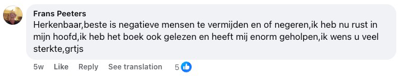
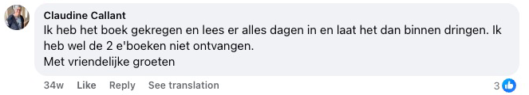
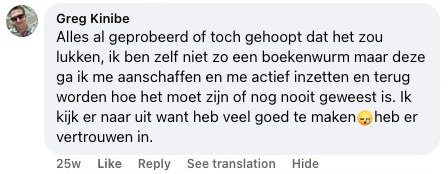
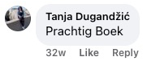

Objev překvapivou metodu, která ti pomůže zastavit příval myšlenek, zklidnit emoce a najít vnitřní klid — bez sebedestruktivních návyků a bez předstírání, že je všechno v pořádku, když není.
Pokud už nechceš dál nosit v sobě bolest, která ti nic nedává – zlomené srdce, které tě pořád pronásleduje, pocit viny, kterého se nedokážeš zbavit, nebo vztek, který tě drží v zajetí – pak ti tahle kniha dá nástroje, pochopení a hlavně úlevu, po které už tak dlouho toužíš.

Tahle kniha je pro TEBE, pokud...
Máš čerstvě po rozchodu a nedokážeš přestat myslet na svého ex
pořád kontroluješ jeho sociální sítě a doufáš ve zprávu, která nikdy nepřijde
Užírá tě pocit viny za něco, co jsi udělala – nebo neudělala
v hlavě si pořád dokola přehráváš, co jsi měla říct jinak, a každý den se za to trestáš
V noci nemůžeš spát, protože se ti myšlenky pořád honí hlavou
usínáš vyčerpaná, ale hlava odmítá vypnout a ráno se budíš ještě unavenější
Cítíš vztek nebo zášť vůči někomu, kdo ti ublížil
a i když víš, že tě to ničí, nedokážeš to pustit z hlavy
Neseš si v sobě bolest ze zrady, kterou jsi nikdy nezpracovala
partner, kamarádka nebo rodina tě zradili a ta rána se pořád nezahojila
Cítíš se uvězněná v minulosti a nedokážeš jít dál
žiješ ve vzpomínkách na to, co bylo, místo v přítomnosti
Bojíš se, že tě lidé opustí, a děláš všechno pro to, abys o nikoho nepřišla
i kdyby to znamenalo, že ztratíš samu sebe
Cítíš uvnitř prázdnotu a už nevíš, kdo jsi bez té bolesti
jako by se tvou identitou stalo utrpení, které si neseš s sebou
9 důvodů, proč ti tahle kniha může změnit život
začni tady, až budeš mít dost bolesti, nekonečného přemítání a vnitřního chaosu.
- → Jak se vyrovnat se zlomeným srdcem – nauč se proměnit bolest z rozchodu nebo ztráty v sílu a vnitřní klid
- → Konec věčného trápení v hlavě – objev praktické techniky, jak prolomit nekonečné mletí myšlenek
- → Odpustit, ale nezapomenout – najdi rovnováhu mezi odpuštěním a ochranou sebe sama před další bolestí
- → Emoční svoboda – vymaň se z okovů vzteku, viny a strachu, které tě drží v zajetí už roky
- → Obnova sebevědomí – znovu vybuduj svůj pocit vlastní hodnoty po období emočních ran
- → Zdravé hranice – nauč se říkat „ne" bez pocitu viny a chraň svůj vnitřní klid
- → Zpracování minulosti – přestaň žít ve vzpomínkách a začni stavět svou budoucnost
- → Lepší spánek – zklidni mysl před usnutím a probouzej se odpočatá místo vyčerpaná
- → Nový začátek – objev, jak z bolesti udělat svého největšího učitele a vybudovat život, na který budeš hrdá

📋 Specifikace produktu
| Název | Pusť to, co tě ničí |
| Autor | Joris de Vries |
| Počet stran | 290 stran |
| Součástí | Pracovní sešit (praktická cvičení) |
| Jazyk | Čeština |
| Vazba | Brožovaná (paperback) |
| Cena | 749 Kč vč. DPH |
| Doprava | Zdarma (po celé ČR, Zásilkovna) |
| Záruka | 30 dní na vrácení peněz |
Tahle kniha může být přesně to, co ti v životě doteď chybělo 💫
Možná už máš za sebou spoustu pokusů. Přečetla jsi knihy, které zněly krásně, ale nikdy nešly opravdu do hloubky. Vyzkoušela jsi terapeutické metody, které slibovaly úlevu, ale v praxi nic nezměnily. A přesto jsi tady – protože uvnitř víš, že pořád existuje naděje. Že vnitřní klid je možný. Že bolest, kterou si neseš, tu nemusí zůstat navždy.
📘 Pusť to, co tě ničí není jen další kniha do knihovny. Je to praktický průvodce od Jorise de Vriese, napsaný na základě jeho vlastní zkušenosti s chronickým přemítáním, pocitem viny, úzkostí a vnitřním chaosem. Tahle kniha ti pomůže:
- přestat se trestat za minulost,
- prolomit spirálu negativních myšlenek,
- a znovu najít důvěru v sebe a svou cestu.
A to všechno srozumitelně a lidsky – bez jediného klišé.
💛 A to pořád není všechno, co dnes získáš:
- Knihu (290 stran) plnou praktických nástrojů, které opravdu fungují
- Pracovní sešit v závěru knihy, který ti pomůže převést teorii do praxe
- Dopravu zdarma po celé ČR přes Zásilkovnu
- 30denní garanci vrácení peněz – bez otázek, bez rizika
✨ Udělej dnes první krok.
Klikni na tlačítko níže a objednej si svůj výtisk ještě dnes. Ne proto, že „musíš". Ale proto, že si zasloužíš cítit se dobře. Bez pocitu viny. Bez masky. A konečně – svým vlastním tempem 🌱
MONEY
BACK
Prodloužená garance vrácení peněz
30 dní místo 14 dnů – kniha tě nenadchla? Máš celých 30 dní na to ji vrátit a dostat peníze zpět.
📖 Přečti si ukázku z naší knihy. Obsahuje jak teorii, tak pracovní sešit, který reaguje na tvoje individuální potřeby 🎯


Jestli už jsi unavená z boje sama se sebou...
Jestli tě v noci pronásleduje, co jsi řekla, neřekla, o co jsi přišla nebo co jsi pokazila...
Jestli pořád doufáš, že se to možná spraví, nebo že to jednou přejde samo – ale dál vězíš ve vlastní hlavě a nic se nemění...
Pak je tohle nejdůležitější kniha, jakou kdy otevřeš.
A tady je důvod:
Myšlenky mi v hlavě kroužily pořád dokola – jako nekonečná smyčka, která se nikdy nezastaví.
„Co kdybych to tenkrát řekl jinak?"
„Možná bychom pak ještě mohli být spolu."
„Všechno je to moje vina."
Každý den působil jako scénář, který se opakuje – úzkost, vzpomínky, přehrávání každého rozhovoru, každého ticha. A doma?
Prázdnota. Ne fyzická, ale uvnitř.
Obklopovaly mě věci, které mi připomínaly, o co jsem přišel. A co jsem možná nikdy neměl pustit. Zkoušel jsem všechno: terapie, afirmace, meditace, přemlouvání sebe sama...
Ale nic nešlo opravdu do hloubky. Nic nefungovalo. Jen další den... stejná bolest... stejné otázky.
„Proč nedokážu jít dál?"
„Co je se mnou špatně?"
„Proč pořád doufám?"
Cítil jsem, že ztrácím sám sebe.
A začal jsem pochybovat, jestli ještě někdy najdu vnitřní klid.

Každý den bez téhle knihy je další den zavřená ve vlastní hlavě.
Kolik hodin už jsi promarnila přehráváním toho, co se stalo – „Kdybych to tenkrát udělala jinak..."
Kolikrát sis přála, aby ta bolest konečně přestala?
Aby bylo uvnitř konečně ticho?
Každá minuta bez správného vedení tě stojí víc stresu, než si zasloužíš.
A každý den, kdy to odkládáš, je den, kdy zůstáváš uvězněná ve staré bolesti.
Jednoho dne jsem si řekl: „Dost!"
Měl jsem po krk života ve stínu bolesti, viny a vnitřního chaosu.
Začal jsem hledat odpovědi – a právě to mě přivedlo k poznáním, která mi navždy změnila život.
Díky těmto principům jsem přestal být vězněm vlastních emocí.
A místo vnitřní války jsem konečně našel klid, po kterém jsem roky toužil. Co se stalo pak?
Lidé kolem mě si začali všímat změny.
Ptali se:
„Jak se ti to povedlo?"
A tak jsem začal sdílet to, co opravdu funguje. Žádné teorie. Žádná prázdná slova. Ale to, co pomáhá ve skutečných chvílích bolesti, ztráty, viny a vzteku.
Výsledkem je tahle kniha. Kniha, která není jen o „odpuštění", ale o tom, jak znovu najít sám sebe.
O uzdravení. A o tom, jak si přestat ubližovat. Je jedno, jestli tě trápí čerstvý rozchod, dávná zrada, nebo roky nezpracovaného pocitu viny – vůči sobě nebo někomu jinému.
Tahle kniha ti ukáže, jak najít cestu zpátky k sobě.
Po svém.
Bez masky.
Bez tlaku.
Beze studu.
A víš co?
Nejsem jediný, komu to zafungovalo.
Jejich příběhy i ten můj. Lidé, kteří roky nedokázali pustit svou bolest, najednou začali zase volně dýchat.
Ti, kteří se topili v pocitu viny, se poprvé podívali do zrcadla beze studu.
A ti, kteří se cítili úplně ztracení, našli cestu zpátky k sobě.
A pozor – tenhle přístup funguje tak dobře proto, že se opravdu dotýká toho, co nás uvnitř drží.
Od vnitřního ochromení po výbuchy vzteku. Od osamělosti po nošení masky.
Od neschopnosti pustit minulost po nenávist k sobě. Každý krok v této knize je pečlivě vystavěný tak, aby vedl ke skutečné úlevě – ne jen k inspiraci na pár dní.
A výsledky?
Přesně to, po čem všichni toužíme: úleva, klid a pocit, že jsi konečně zase doma – ve svém těle, ve své hlavě i ve svém srdci.
A víš co?
Mohl bych o tom napsat samostatnou knihu – jen o příbězích lidí, kterým tenhle přístup úplně změnil život.
Tyhle metody jsem totiž sdílel s lidmi všech věkových kategorií, z nejrůznějších životních situací a s těmi nejodlišnějšími vnitřními bolestmi. Od těch, kteří právě procházeli čerstvým rozchodem…
Po ty, kteří 20 let potlačovali vztek. Od lidí s úzkostmi, kteří se báli už jen rána…
Po ty, kteří uvnitř už vůbec nic necítili. A výsledek? Úleva, jakou si předtím nedokázali ani představit.
Vnitřní ticho tam, kde byl celý život křik.
Dýchání bez bolesti. A prostor – pro nové, jemné začátky.
Někteří „experti" se mě dokonce ptali:
Funguje to opravdu?
Není to trošku moc jednoduché?
No…
k tomu se za chvíli vrátíme. Ale nejdřív – pojďme se podívat na další důkazy, že tahle cesta skutečně funguje.

📚 Čtenáři po celé Evropě našli díky této knize klid – začínali stejně jako ty: unavení, přetížení, ale připravení na změnu ✨
Jako by někdo mávl kouzelnou hůlkou…
Čím víc jsem slýchal od čtenářů, kteří se potýkali s bolestí, ztrátou nebo vnitřním bojem, tím jasnější to bylo: tyhle principy fungují všude.
Cítil jsem, že tenhle přístup je jiný – ale zpočátku jsem přesně nevěděl proč. Tak jsem šel hlouběji. Začal jsem vidět vzorce.
Opakující se vnitřní dialogy, obranné mechanismy, které se vracely pořád dokola.
Testoval jsem. Pozoroval. Přemýšlel. A krok za krokem jsem vybudoval metodu, která neřeší jen příznaky, ale příčinu. A výsledky?
Lidé, kteří si mysleli, že se nikdy nezmění, najednou pocítili opravdovou úlevu.
Ti, kteří věřili, že „takhle to prostě mám", začali znovu růst.
A kdo se cítil úplně ztracený, našel zase svůj kompas.
Od té doby jsem tuhle metodu použil na téměř všechna bolavá místa, která lidi nejvíc trápí:
- Pocit viny a stud: Nauč se, jak si odpustit a přestat se trestat za chyby z minulosti. Místo toho začneš zase cítit lehkost a vlastní hodnotu.
- Vztek a zášť: Dostaneš nástroje, jak nechat staré rány odejít a přestat v hlavě bojovat s lidmi, kteří ti ublížili. Ne kvůli „vyrovnání účtů", ale s jistotou, že nad tebou už nemají moc.
- Pocit osamělosti: Nauč se, jak si vytvořit bezpečí sama v sobě, i když kolem není nikdo, kdo by tě chápal. Zjistíš, že být sama neznamená prázdnotu.
- Neustálé přemítání: Přestaneš si přehrávat scénáře „co kdyby" a naučíš se zastavit spirálu myšlenek dřív, než tě pohltí. Tvoje mysl bude zase místem klidu, ne územím strachu.
- Strach ze ztráty / opuštění: Objev, jak zacházet s hlubokým strachem, že o někoho přijdeš – aniž by ses vzdala potřeby blízkosti nebo vlastní hodnoty.
- Uvíznutí v minulosti: Nauč se, jak přestat žít v minulosti – a konečně udělat svůj první skutečný krok vpřed. Ne jen „hoď to za hlavu", ale opravdové uzdravení zevnitř.
A funguje to v každé situaci, kdy se snažíš pustit něco, co tě uvnitř svazuje.
Tyhle principy můžeš použít ve svém vlastním životě – a konečně začít žít s lehkostí, klidem a jistotou, že to zvládneš.
Tohle není teorie. A nejsou to ani prázdné spirituální řeči.
Je to praktický systém, který pomáhá čtenářům po celé Evropě vyrovnat se s vinou, smutkem, strachem, vztekem a stagnací.
Každý nástroj v této knize vychází přímo z osobní zkušenosti – zrodil se z let hledání, skutečných příběhů, pádů a vstávání.
A právě proto jsem se rozhodl svá poznání sdílet. Abys nemusela projít stejnou bolestí jako já.
Těmi nekonečnými večery, kdy se hroutíš pod vlastními myšlenkami. Tím vyčerpávajícím pocitem, že zkoušíš všechno… a nic nefunguje.
Tím tichým zoufalstvím, kdy si říkáš:
„Možná to už nikdy nepřejde."
Ale tam zůstat nemusíš.
Tahle kniha ti ukáže, že existuje jiná cesta – a že je blíž, než si myslíš.
A chápu, jestli ještě váháš. Ale neboj – za chvíli ti prozradím „tajemství", proč tohle všechno sdílím… a proč to nestojí tisíce korun.
Ale nejdřív – pojďme se podívat na…
Zákazníci z Nizozemska, Belgie, Švédska, Norska a Německa
našli v této knize sami sebe.
Pochopení je začátek uzdravení 💡
📌 Oficiální recenze z Nizozemska — bez jediného vymyšleného slova.
Recenze, které vidíte níže, jsou skutečné příspěvky a komentáře z Facebooku ze zemí, kde kniha vyšla jako první a kde si ji už přečetly tisíce čtenářů — proto jsou v nizozemštině.
Nechtěli jsme lhát. Nechtěli jsme vymýšlet falešné recenze ani nic přikrášlovat, aby to působilo přesvědčivěji.
Proto jsme se vědomě rozhodli zveřejnit recenze přesně tak, jak je čtenáři sami napsali — v původním jazyce, bez překládání, úprav nebo změny jediného slova. Tak máte jistotu, že čtete opravdová slova od opravdových čtenářů.
Samotná kniha je přitom plně lokalizovaná do češtiny — spisovně, gramaticky a s citem pro jazyk.
📖 Tip: pro přečtení recenzí v češtině použijte funkci překladu ve svém prohlížeči.
Co o knize píší čtenáři — přeloženo do češtiny
Posouvejte recenze doleva a doprava. Pod každým překladem najdete originální komentář z Facebooku, takže si pravost můžete kdykoli ověřit sami.














Kdo je autorem této knihy?

Jmenuji se Joris de Vries. A tuhle knihu jsem nenapsal ze slonovinové věže – ale z nejhlubší jámy svého života.
Před patnácti lety jsem ztratil všechno, co jsem znal.
Můj vztah se zhroutil. Sebevědomí zmizelo. V noci jsem ležel s otevřenýma očima, uvězněný v nekonečných smyčkách myšlenek. Pocit viny mě užíral zevnitř. Už jsem nevěděl, kdo jsem, ani proč ráno vstávat.
Zkoušel jsem všechno. Příručky o seberozvoji, podcasty, meditační aplikace, rozhovory s přáteli. Nic se nedotklo jádra.
Dokud mi nedošlo, že odpověď musím najít sám.
Začal jsem číst. Ne jednu knihu, ale stovky. O neurovědě, filozofii, psychologii. Cestoval jsem, mluvil s lidmi, kteří si prošli tím samým, a pomalu jsem skládal dílky skládačky dohromady.
Trvalo mi to roky. Roky pádů a vstávání. Recidiv a průlomů. Pochybností a nakonec – osvobození.
- Sám jsem si prošel nejhlubšími údolími – a našel cestu zpátky
- Roky samostudia neurovědy, filozofie a lidského chování
- Vyvinul jsem vlastní metodu, která pomohla mně i dalším
- Všechno, co jsem se naučil, jsem shrnul do této knihy – abys nemusela jít stejnou oklikou
To, co jsem objevil, mi změnilo život:
Většina lidí netrpí tím, co se jim stalo – ale tím, co si o tom myslí.
Tohle poznání se stalo základem této knihy.
Je kombinací:
- Poznatků z neurovědy (jak tě tvůj mozek sabotuje)
- Východní filozofie (umění nechat věci odejít)
- Praktických cvičení (konkrétní kroky, které fungují hned)
📖 Čtenáři knihy Pusť to, co tě ničí zažívají už během prvních týdnů skutečnou změnu — víc klidu, jasné hlavy a emoční úlevy 🌟


Možná to není první kniha, kterou čteš 📖
A možná právě proto by mohla být tou poslední, kterou opravdu potřebuješ.
Možná už jsi vyzkoušela všechno možné.
Rady, které zněly hezky, ale nic nezměnily.
Metody, které fungovaly… do dalšího pádu.
A přesto jsi tady. A to něco znamená. Znamená to, že jsi ještě neztratila víru.
Že uvnitř pořád víš, že úleva je možná. Že klid není sen, ale dovednost. A že tvoje bolest k tobě nemusí patřit navždy.
📚 Pusť to, co tě ničí není náplast – je to mapa. Mapa zpátky k sobě.
Autor Joris de Vries v této knize sdílí jasné, funkční a lidské kroky, které pomohly jemu i dalším:
- pustit vinu a sebetrestání,
- prolomit kruh přemítání a vnitřních hlasů,
- znovu najít důvěru – v sebe, v život i v druhé.
Nečekej žádné ezoterické řeči. Ani tvrdou psychologii bez soucitu. Čekej opravdovost. Otevřenost. A úlevu.
✨ První krok je malý. Ale může změnit všechno.
Nemusíš mít všechno vyřešené, abys mohla začít. Nemusíš být silná – stačí být otevřená myšlence, že to jde i jinak.
👉 Klikni na tlačítko a začni číst.
Možná tady najdeš ten klid, který jsi celou dobu hledala.
Doprava zdarma
Po celé ČR přes Zásilkovnu – poštovné platíme za tebe. Ty platíš jen za knihu – o zbytek se postaráme my.
🎁 Bonusy níže jsou dostupné pouze dnes k objednávkám knihy Pusť to, co tě ničí – nenech si tuhle jedinečnou příležitost utéct! ⏰

🎁 #1 BONUS: E-kniha Řešení nadměrného přemýšlení
Tuhle exkluzivní bonusovou e-knihu dostaneš zdarma, když si objednáš ještě dnes. Obsahuje praktické nástroje a cvičení, které dokonale doplňují hlavní knihu.
- Pracovní listy navíc pro hlubší poznání sebe sama
- Každodenní cvičení, jak teorii převést do praxe
- Exkluzivní poznatky, které jinde nenajdeš
- Ke stažení ihned po objednávce

🎁 #2 BONUS: E-kniha Láska bez cenzury
Pravda o vztazích, o které se nikdo neodváží mluvit. Přestaň se zalíbovat všem. Přestaň ztrácet sama sebe ve vztahu, který tě vyčerpává, zraňuje a pomalu ničí. Získej zpět svou sílu, jasnost a schopnost volit to, co chceš ty – ne to, co od tebe čekají ostatní.
Tohle není příjemná příručka o komunikaci. Tahle kniha je konfrontace sama se sebou. Proč jsi tam, kde jsi. A co musíš udělat, aby ses z toho dostala.
Cítíš, že ve tvém vztahu něco nesedí? Pochybuješ, jestli je to tebou – nebo tím druhým? Ztratila jsi spojení, přitažlivost nebo samu sebe? Tahle kniha rozbije tvoje iluze. A pomůže ti znovu se postavit na nohy.
- Odhal své vzorce sebezničení a nauč se s nimi pracovat
- Získej kontrolu nad svými emocemi, strachy a reakcemi
- Pochop, co znamená opravdová oddanost – a kdy je čas odejít
- Převezmi plnou odpovědnost a vytvoř vztah, který opravdu funguje
- Nečekej, až se změní ten druhý. Změň sebe – a všechno se změní s tebou
Možná se právě teď ptáš – „Proč bych měla utrácet peníze za tuhle knihu?" 🤔📘 Odpověď je jednoduchá:
Máš 30 dní na vyzkoušení – a kdyby ti kniha nesedla? Dostaneš peníze zpět.
Žádné otázky, žádné komplikace. Ale obě víme, že ji vracet nebudeš. Protože jakmile začneš číst, ucítíš, že tahle kniha ti může změnit život.
Čím je tahle kniha jiná:
- Praktická použitelnost – Tahle kniha nenabízí jen poznatky, ale i konkrétní kroky, které můžeš hned použít ve svém každodenním životě.
- Postavená na zkušenosti – Metody vycházejí z osobní zkušenosti a let samostudia, takže víš, že se učíš poctivé, ověřené nástroje.
- Zaměření na hluboké uzdravení – Na rozdíl od jiných knih míří tahle na jádro tvé emoční zátěže, ne jen na povrchové příznaky.
- Emoční blízkost – Kniha je napsaná s empatií a pochopením, takže se na své cestě k vnitřnímu klidu budeš cítit vyslyšená a podpořená.
- Jedinečné vhledy – Kniha přináší překvapivé úhly pohledu, které jinde nenajdeš, a díky nim se na sebe a své emoce podíváš úplně novýma očima.
Kniha, kterou čteš vlastním tempem
Žádný spěch, žádný tlak. Začni, až budeš připravená, a dej si tolik času, kolik potřebuješ.
Praktické nástroje na každý den
Díky konkrétním cvičením a pracovnímu sešitu můžeš začít hned – krok za krokem, svým tempem.
Zasloužíš si být svobodná
Odpustit a nechat věci odejít není slabost – je to síla. Tahle kniha ti pomůže udělat místo pro to, co tě opravdu dělá šťastnou.
📦✨ Připravená začít? Objednej ještě dnes a knihu ti doručíme až domů 📘🙏
Tvoje cesta k vnitřnímu klidu začíná tady.
📘 Knihu i s pracovním sešitem získáš za pouhých 749 Kč – méně než večeře pro dva nebo plná nádrž benzínu.
Ale na rozdíl od těchto věcí ti tahle kniha dá hodnotu na celý život. 💎💚
Pomůže ti najít vnitřní klid, pustit bolest, kterou v sobě držíš už roky, a znovu cítit, že jsi sama v sobě doma. ❤️
Díky téhle malé investici získáš praktické nástroje, které můžeš používat celé roky – kdykoli je budeš potřebovat, svým vlastním tempem. 🌱
❓ Otázky, na které se ptáte nejčastěji 💬
Funguje to opravdu? Není to jen další prázdná kniha o seberozvoji?
Tvoje pochybnosti naprosto chápu. „Pusť to, co tě ničí" není typická seberozvojová kniha plná vágních rad nebo hezkých citátů. Je postavená na osobní zkušenosti a letech samostudia neurovědy, filozofie a lidského chování. Joris de Vries tyto techniky vyvinul poté, co si sám prošel hlubokou krizí a našel cestu zpátky. Rozdíl je v praktických, konkrétních krocích, které opravdu fungují – i ve chvíli, kdy se cítíš na dně. A díky naší 30denní garanci vrácení peněz neriskuješ vůbec nic.
Už jsem toho vyzkoušela tolik – proč by tohle mělo být jiné?
Je pochopitelné, že jsi skeptická – je frustrující investovat čas a naději do různých metod, které nakonec žádnou skutečnou změnu nepřinesou. Tahle kniha je jiná díky přímému, praktickému přístupu založenému na osobní zkušenosti, ne na suché teorii. Vznikla ze skutečného příběhu autora, který předtím taky „všechno" vyzkoušel, ale úlevu nakonec našel díky vlastní metodě. Na rozdíl od obecných rad tu dostaneš konkrétní techniky, které fungují i ve chvílích, kdy se cítíš vyčerpaná. A kdyby ti kniha přece jen nesedla, můžeš ji díky naší 30denní garanci vrácení peněz vyzkoušet úplně bez rizika.
Co když to u mě fungovat nebude? Moje situace je jiná nebo složitější.
Každý člověk je jedinečný a nese si svůj vlastní příběh. Právě proto je „Pusť to, co tě ničí" navržena tak, aby nabízela flexibilní postupy, které jdou přizpůsobit různým situacím a úrovním složitosti – od čerstvých rozchodů po roky nezpracované bolesti. Pracovní sešit v knize ti umožní aplikovat metody na tvoje konkrétní okolnosti. Čtenáři s nejrůznějšími příběhy – od vyrovnávání se se ztrátou přes pocity viny až po vztek a neklid – už v této knize našli oporu. A nezapomeň: nabízíme 30denní garanci vrácení peněz bez nepříjemných otázek.
Není 749 Kč za knihu moc?
Nedostáváš jen knihu o 290 stranách – součástí je i praktický pracovní sešit a doprava zdarma po celé ČR přes Zásilkovnu. Mnoho čtenářů nám napsalo, že jim jediné poznání z knihy ušetřilo spoustu času a energie. Za cenu jednoho večera venku získáš nástroje, které můžeš používat celé roky. A při objednávce více výtisků navíc ušetříš až 997 Kč díky zvýhodněným balíčkům. S naší 30denní garancí vrácení peněz neriskuješ vůbec nic.
Nebylo by lepší investovat do terapeuta než do knihy?
Terapie a tahle kniha se vůbec nevylučují – naopak se mohou skvěle doplňovat. Spousta lidí používá tuhle knihu jako první krok na cestě k uzdravení, nebo ji čte vedle terapie pro hlubší porozumění a procvičování mezi sezeními. Za zlomek ceny několika terapeutických sezení získáš nástroje, které můžeš použít, kdykoli je potřebuješ – uprostřed noci, v soukromí domova, svým tempem. Můžeš začít hned, bez čekacích lhůt. A pokud budeš později potřebovat osobní vedení, dá ti tahle kniha pevný základ, díky kterému z terapie vytěžíš mnohem víc.
Kdo je Joris de Vries? Můžu mu věřit?
Joris de Vries je autor, který si sám prošel hlubokou osobní krizí – a vyšel z ní silnější. Po letech samostudia neurovědy, filozofie a lidského chování vyvinul praktickou metodu, která mu pomohla pustit to, co ho ničilo. Metody v této knize nejsou teoretické – zrodily se ze skutečné osobní zkušenosti. Jeho přístup kombinuje poznatky z různých oborů, převedené do srozumitelných technik, které zvládne použít každý. Jeho postup můžeš vyzkoušet bez rizika díky naší plné 30denní garanci vrácení peněz.
Proč není tahle kniha běžně k dostání v knihkupectvích?
Vědomě jsme zvolili přímý prodej, abychom ti mohli nabídnout co nejlepší zkušenost. Díky tomu můžeme nabízet dopravu zdarma, zvýhodněné balíčky více výtisků a osobní 30denní garanci vrácení peněz – věci, které jsou přes velké platformy se 40–60% provizí nemožné. Navíc tak můžeme poskytovat přímou zákaznickou podporu a rychle reagovat na tvoje dotazy. Ty získáš za své peníze víc, a my s tebou můžeme budovat přímý vztah.
Je kniha k dispozici i jako e-book?
Momentálně nabízíme knihu pouze v tištěné podobě – včetně pracovního sešitu, do kterého můžeš přímo psát. Práce s tužkou v ruce je ostatně součástí metody: cvičení fungují nejlépe, když si je opravdu vyplníš. Pokud by se v budoucnu objevila digitální verze, dáme vědět jako prvním našim čtenářům e-mailem.
Jak dlouho trvá, než knihu dostanu?
Knihu doručujeme do 2–3 pracovních dnů od objednávky. Odesíláme obvykle do 24 hodin z českého skladu přes Zásilkovnu – a doprava je úplně zdarma, poštovné i balné jsou v ceně. Po odeslání ti přijde potvrzovací e-mail s údaji ke sledování zásilky. Kdyby doručení z jakéhokoli důvodu trvalo déle, klidně nám napiš na podpora@pusttocotenici.cz a hned to prověříme.
Pro koho je tahle kniha určená? Hodí se na moji situaci?
Tahle kniha je pro každého, kdo se potýká s emoční zátěží – ať už jde o bolest po rozchodu, pocity viny, které tě pořád pronásledují, vztek, který nedokážeš pustit, neustálé přemítání, strach z opuštění, nebo pocit, že ses úplně ztratila. Je napsaná pro lidi v nejrůznějších životních situacích: od těch, kteří nedávno zažili ztrátu, po ty, kteří si roky nesou nevyřešenou bolest. Kniha je záměrně psaná bez odborného žargonu, aby byla přístupná všem. Metody si můžeš přizpůsobit svým individuálním potřebám díky praktickému pracovnímu sešitu, který je její součástí.
Je 30denní garance vrácení peněz opravdu bez komplikací?
Naprosto. Pokud do 30 dnů nepocítíš zlepšení nebo z jakéhokoli důvodu nebudeš spokojená, dostaneš zpět celou částku. Stačí nám knihu poslat zpátky ve 100% perfektním stavu, a jakmile nám dorazí, vrácení peněz ihned zpracujeme. Žádné složité formuláře, žádné nepříjemné otázky, proč to nefungovalo, žádné obstrukce. Prostě napiš e-mail na podpora@pusttocotenici.cz a všechno za tebe vyřídíme. Děláme to proto, že hodnotě této knihy plně věříme a chceme, aby sis ji mohla vyzkoušet bez obav. Tvoje spokojenost a pohoda jsou důležitější než prodej.
Jak poznám, že mi tahle kniha opravdu pomůže?
Každý člověk je jiný a konkrétní výsledky slibovat nemůžeme. Co ale říct můžeme: kniha nabízí konkrétní cvičení a pracovní sešit, se kterými můžeš začít hned. Čtenáři nám pravidelně píší, že jim praktický přístup opravdu pomohl. Pro představu si můžeš přečíst recenze na této stránce. A to nejdůležitější: s naší 30denní garancí vrácení peněz neriskuješ vůbec nic. Nebude ti kniha fungovat? Dostaneš peníze zpět.
Je moje platba bezpečná? Můžu téhle firmě věřit?
Tvoje platba je plně zabezpečená. Platby zpracovávají prověřené platební služby, které dbají na to, aby byla platba bezpečná, rychlá a férová pro obě strany. Používáme platební brány splňující nejvyšší bezpečnostní standardy (SSL šifrování a PCI-DSS compliance). Tvoje finanční údaje u nás nikdy neukládáme – všechno zpracovává přímo a bezpečně platební brána. Jsme registrovaná firma (Performance Marketing Solution s.r.o., IČO: 06259928) s transparentními obchodními podmínkami a zásadami ochrany osobních údajů. Navíc nabízíme plnou zákaznickou podporu na podpora@pusttocotenici.cz. A nezapomeň: s naší 30denní garancí vrácení peněz stejně neneseš žádné finanční riziko.